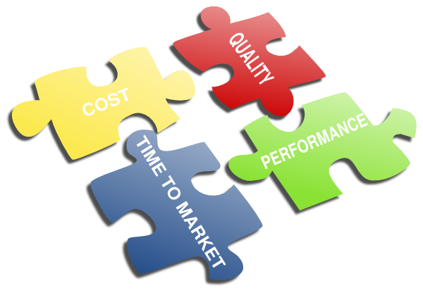
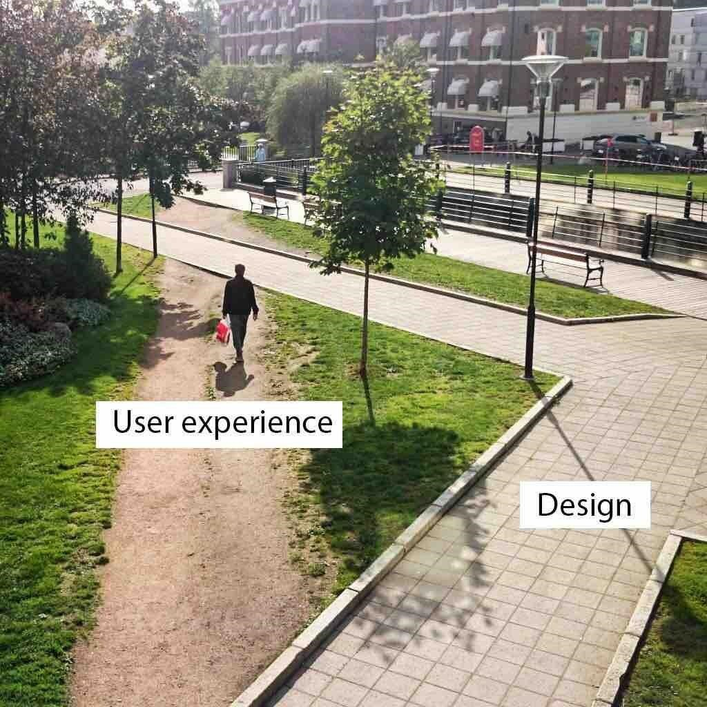

Never Stop LEARNING...
PREVIOUS BLOG NEXT BLOG
CEOs: 3 Ways to Speed up Business Success-PART 1/2
Article Length: 500 words.
Reading time: 3~4 minutes.
 William Li (47), (CEO of Bluebell Infotech, Tianjin China - a fictitious firm) was returning from a global summit on “Cyber Security and Privacy” held in Berlin. Flight was delayed by 2.5 hours, therefore he decided to relax in VIP lounge. William received a call from marketing head ‘Bob’ about securing a key project from a new client. He was shocked to hear that delivery is merely 6 months away. Last week HR manager briefed that company is losing its competitive edge cos of talent crunch. Attrition surpassed 25%, hiring managers were struggling hard to find the right talent. Inadequate training was leading to late delivery and lower satisfaction to clients.
Since its inception in 2006, Bluebell is known to offer cutting edge and top notch solution to clients, however since two years company is struggling hard to maintain the pace. William knew that in order to grow, primarily Bluebell need to sustain in competitive market. But technical volatility, economic uncertainty and talent crunch were severely hampering his ambitions.
Analysis: The situation is quite common in IT and related industries. CEO cum founder invest lifetime in company. Employees are free to switch job/career. But most CEOs or top management doesn’t have this luxury. According to FORBES only 10% startups survive after 5 years in business (Read Here). We’ve seen that due to lack of innovation, established companies have become history e.g. KODAK, NOKIA, and ENRON etc.
Let us review why companies fail to deliver-
- Overreliance on Technology: People drive technology not vice versa. Merely investing in latest tools or technology will not serve the purpose.
- Unable to reach workforce: As I mentioned in my previous blog “Management-Employee: The Missing Link”, top management gets too busy on strategic issues and running after the numbers rather than to reach workforce. Especially in IT industries – employee works like a robot. They reach office, write code, get paid and cycle repeats. Most employees aren’t able to realize the vision/mission of enterprise. Visions, and mission merely decorate a webpage on corporate websites.
- Focus on Management: Top management completely rely on middle management. These managers are usually promoted from technical roles. Despite being technically competent, often these managers lack necessary leadership skills to manage the vibrant workforce.
Call for Action: Innovation is the key to sustainability and growth. Finally here are the 3 Ways to Speed up Business Success and attain Growth and Sustainability.
- Focus on UX: According to Gartner reports-Only 30% software succeed. Reason is well explained here in this image- 
- Keep refining priorities and business objectives: No strategy is the best strategy. Setting long term visions and objectives create bottleneck for enterprises. Instead short term wins and keep changing course of action according to market forces seems viable strategy.
- Hire and retain the best talent: This is the core solution to speed up business success and maintain competitive edge. HCM (Human Capital Management) need to be the first and foremost strategic priority.
..To be continued in part 2.
Note: Based on feedback from readers, I keep my articles short and crisp, i.e. 500 (English) words, Reading time: 3~4 minutes.
Feel free to reach me at:
Email: kaushiknt@yahoo.com
WeChat: kklove0604
PREVIOUS BLOG NEXT BLOG